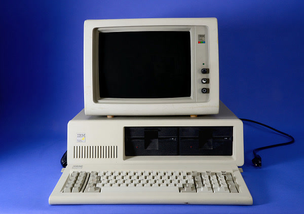
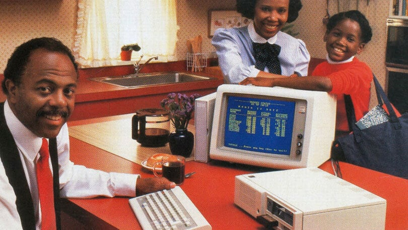
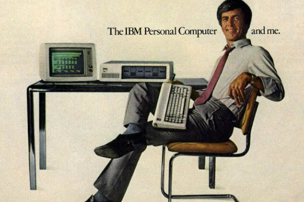

 Just a few years later in 1981 IBM released their own personal computer literally called the IBM PC. Leading up to its launch was very skeptical as many advertisers didn’t have samples and many people were left wondering why the IBM was so great.Even though the problematic release in the first year IBM generated one billion dollars in revenue from the IBM PC. In the second year of selling IBM was having 200,000 orders per month. The IBM PC was a massive success in the business world due to its price and the software support on the computer.
 After the initial jump in sales IBM worked hard for better software getting licenses from different software developers to provide programs to satisfy their customers. Having all these computers in the office exposed many who would otherwise not touch or use computers to the wonderful world of computing. Rather than seeing computers as a thing for hobbyists people began to see that as a great way to entertain and use for everyday life.